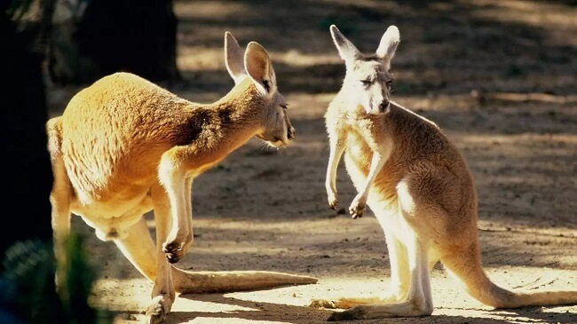
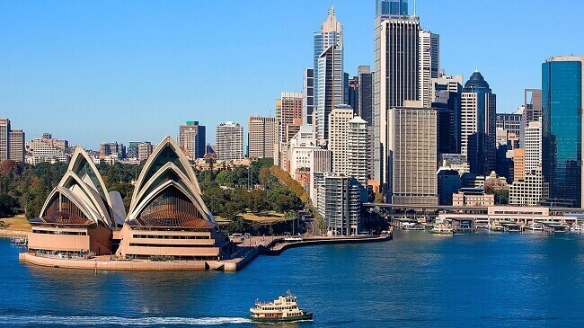
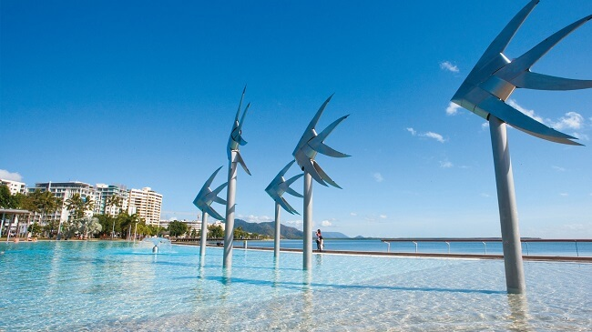
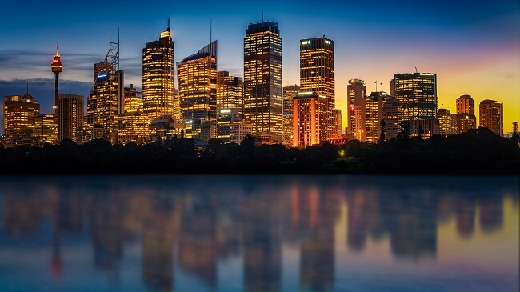

morly旅游圈
澳大利亚（Australia），全称为澳大利亚联邦（The Commonwealth of Australia），是一个发达的资本主义国家。 1788年至1900年，曾是英国的殖民地。1901年，殖民统治结束，成为一个独立的联邦国家。澳大利亚一词，意即“南方大陆”，欧洲人在17世纪初叶发现这块大陆时，误以为是一块直通南极的陆地，故取名“澳大利亚”，Australia 即由拉丁文 terraaustralis （南方的土地）变化而来。 澳大利亚四面环海，是世界上唯一一个国土覆盖整个大陆的国家，拥有很多自己特有的动植物和自然景观。澳大利亚领土面积761.793万平方公里，是南半球经济最发达的国家，全球第12大经济体，全球第四大农产品出口国，也是多种矿产出口量全球第一的国家被称作“坐在矿车上的国家”。 澳大利亚也是世界上放养绵羊数量和出口羊毛最多的国家，被称为“骑在羊背的国家”。
澳大利亚（Australia）位于南太平洋和印度洋之间，由澳大利亚大陆和塔斯马尼亚岛等岛屿和海外领土组成。它东濒太平洋的珊瑚海和塔斯曼海，西、北、南三面临印度洋及其边缘海。是世界上唯一一个独占一个大陆的国家。 澳大利亚的地形很有特色。东部山地，中部平原，西部高原。全国最高峰科修斯科山海拔2228米，在靠海处是狭窄的海滩缓坡，缓斜向西，渐成平原。沿海地区到处是宽阔的沙滩和葱翠的草木，那里的地形千姿百态：在悉尼（Sydney）市西面有蓝山山脉的悬崖峭壁，在布里斯本北面有葛拉思豪斯山脉高大、优美而历经侵蚀的火山颈，而在阿德雷德市西面的南海岸则是一片平坦的原野。
澳大利亚有哪些值得去的地方呢，接下来跟着我一起游韩国吧
No.1 大堡礁-圣灵群岛（GreatBarrierReef）
无论是潜入水中与苏眉鱼、海龟等一起畅游，还是从空中俯瞰包括心形礁在内的大堡礁的壮阔和浪漫，漫入眼帘的碧海苍穹，柔绵的白沙带来一种纯洁的触感，在这里所见到的一切都是一场视觉的盛宴。
绵延于昆士兰州2300公里的海岸线，比长城还要长，甚至是唯一可在月球上被观测到的生态系统，被誉为自然世界七大奇观之一。大堡礁是世界上最大最广阔的珊瑚礁生态系统。它由大约2900百种珊瑚礁，600座陆地岛和300座珊瑚岩礁像条缎带一样和海岸线平行。用一个贴近生活的比喻，大堡礁的海域范围大概有七千万个足球场或者一个日本那么大！所以，不是只有凯恩斯才有大堡礁哦！今天给大家介绍的是位于圣灵群岛的大堡礁区域。
坐落在大堡礁中央，毗邻澳大利亚昆士兰海岸，是世界上最壮观的海洋生物乐园之一。作为大堡礁世界遗产保护区里的一部分，也叫降灵群岛或者惠森迪，据说是圣灵降临的时候，库克船长发现了这里，所以取了这个名字。圣灵群岛位于昆士兰东海岸中部，距离布里斯班约1120公里，距离凯恩斯约630公里,是澳大利亚海岸最大的群岛，是一个由74个岛屿热带岛屿汇聚而成的人间天堂，纯白的沙滩依偎在岛屿四周，让整个群岛仿佛漂浮在一片温暖清澈的珊瑚海水域之中。
圣灵群岛74座岛中，大多是荒无人烟的小岛，只有8座岛上有人居住。这些岛屿包括著名的圣灵岛（Whitsunday Island）、汉密尔顿岛( Hamilton Island )、海曼岛(Hayman Island)、林德曼岛（Lindeman Island）、白日梦岛(Daydream Island) 、富克岛(Hook Island)、长岛（Long Island）等，全是一流的旅游度假胜地。岛上建有疗养型度假村，度假村都各具特色，例如很适合情侣蜜月和追求享乐的家庭旅游的汉密尔顿岛，甚至如海曼岛和以SPA闻名的白日梦岛是“一岛一酒店”。
【地点】只能从澳洲境内去圣灵群岛，没有国际直航航班，一般要先飞到布里斯班、凯恩斯、悉尼或者墨尔本，再转机到艾尔利海滩附近的普罗瑟派恩
No.2 蓝山国家公园
蓝山国家公园坐落在从海拔100公尺到1300公尺之间的高原丘陵上，特殊的地理和气候环境，蕴育了种类繁多的动植物，蓝山全地区生长著庞大的原始丛林和亚热带雨林。蓝山名字的由来是因为那里有蓝色的雾，这个景观的形成是由澳洲的国树尤加利树排出来的油被太阳照射接触到而使整个蓝山发出淡淡的蓝雾。
蓝山山脉位于悉尼以西约65千米处，是澳大利亚东南部的新南威尔士州一处旅游胜地，它从东向西倾斜，东部最高点海拔1070米，西部山峰高360～540米。蓝山峰峦陡峭，涧谷深邃，山上生长着大量桉树，桉树为常绿乔木，树干挺拔，木质坚硬，含有油质，可提取挥发油，其自然的挥发的油滴，在空气中经阳光折射呈现出蓝光，此山脉因而得名蓝山。
蓝山有著名的三姐妹峰，相传在很久以前有三位美貌的姐妹分别叫做 "靡爱倪", "温拉" 和 "甘妮杜"。这三位姐妹出生在Katoomba部落，很不幸的是他们三人同时爱上了山下Nepean族兄弟三人。这是有违异族缩怨与规矩，不被父辈首肯，后来因为他们的恋情而引爆了两族的战争。当时有一位巫师为了保护三姐妹免受战争的威胁就把她们变成石头。然而最后巫师却战死，剩下守山谷的三姐妹岩，因此三姐妹岩成了蓝山最闻名的名胜。蓝山里三座岩石分别为922米，918米和906米。
蓝山除了美景之外还有各式各样的活动可提供观光客游玩。在蓝山公园里的Lithgow乘坐怀旧蒸气火车畅游，沿著蓝山河岸或是在蓝山的森林内骑马，惊险刺激的攀岩，在蓝山峡穀底部500公尺的观光步道，搭乘蓝山的空中缆车，它在距离谷底300米的高空行驶500米左右以后再返回。只要是没有极高症的旅客们都应该去观赏一番。最后蓝天公园里还有号称世界第一的倾斜角52度的轻便台车，它行驶的海拔高度差有650米。
喜爱观赏大自然神奇的景观的朋友们自然不能错过蓝山公园里的Jenolan Caves。它是由8个洞穴组成，洞内的钟乳石形状奇特，像垂暮一样从洞顶垂落。往更底下走还有让人叹为观止的地下湖，在洞穴的内部都有观赏专用的步道，并且都有良好的照明设施
【地址】蓝山国家公园坐落在新南威尔士州境内，距离雪梨(悉尼)97公里，车程1小时30分钟。
No.3 黄金海岸
一段长约42公里，10多个连续排列的优质沙滩组成，沙滩金色而得名。这里气候宜人，海浪险急，非常适合冲浪和划水🏄♀️🏄，是冲浪者的天堂。
黄金海岸 星空塔观景台位于市中心，高达322米的摩天大楼。她的外观灵感来自于千禧年 悉尼 奥运会火炬，也是南半球最高的楼，更是世界最高的纯住宅公寓大厦。
位于最高层的星空塔观景台是 澳大利亚 唯一的海滨观景台。乘坐世界上最快的直升电梯，升至距地面230米的高处，用时不到43秒，电梯顶部有升降直播，画面感极强。
【地址】 位于澳大利亚东部海岸中段， 布里斯班以南
No.4 摩顿岛Moreton Island（海豚岛）
摩顿岛Moreton Island是位于太平洋上的小岛， 东海 岸临近 布里斯班 黄金海岸 ，是世界上第三大沙岛，因野生海豚而闻名世界，所以又称“海豚岛”。以往游客并不太多，但自从周董和昆凌在这里度了个蜜月，上岛的国人渐渐多了起来，岛上还有专门的中文服务。
这里有一个美丽的故事…
1992年，岛上开始有灯光，海豚游到这边活动。一位岛民看到并喂食了一条小海豚，并给她取名Beauty。没想到贪吃的Beauty就经常来到这里撒娇求喂，渐渐还带着自己的孩子前来，子子孙孙…Beauty的后代每天晚上都来岸边戏水，欢快歌唱。
人与海豚的良性互动就这么延续了下来…
据工作人员介绍，现在前来的海豚是beauty的曾孙辈了，一年365天从不间断风雨无阻，工作人员还会帮每条海豚打卡哦！
日落时分，海豚们如约而至，实在太神奇太兴奋了！！！
现场工作人员会先给大家介绍注意事项，然后组织大家有序的排队，先消毒双手，再喂海豚。为了保护野生海豚也保护我们自己，不能触摸！不能触摸！不能触摸！
【地址】位于太平洋上的小岛， 东海岸临近布里斯班黄金海岸
【门票】无
内容整理至网络，如有侵权，请联系我们！1255394075@qq.com
 